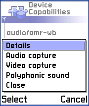
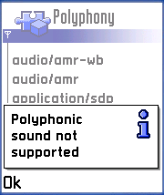
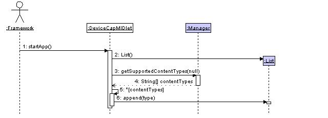
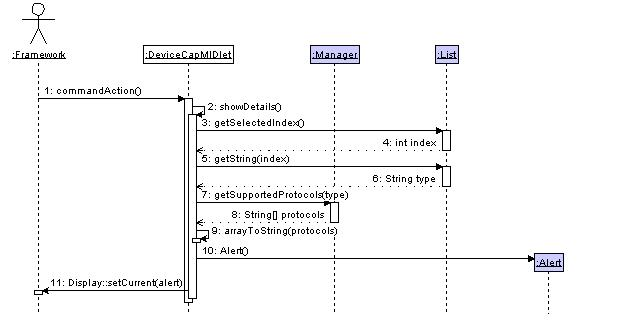
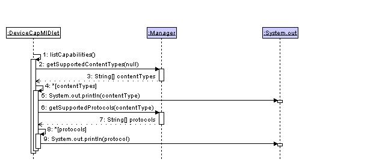
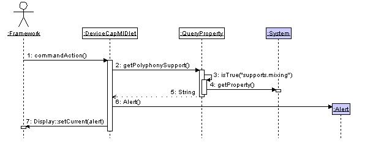
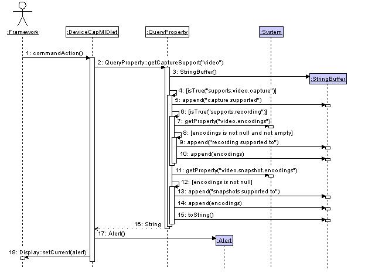

|
||||||||||
| PREV PACKAGE NEXT PACKAGE | FRAMES NO FRAMES | |||||||||
See:
Description
| Class Summary | |
| DeviceCapMIDlet | Lists the media content types supported by this device, and the protocols which they can be requested with. |
| QueryProperty | Wrapper for queries to System.getProperty() to retrieve Mobile Media support information. |
This example displays the list of media formats that a device supports,
and the download protocols supported for each one.
This example displays the list of media formats that a device supports, and the download protocols supported for each one. It also provides information about support for capturing and recording media, and playback of polyphonic sound.
The example makes use of the standard MIDP application framework and LCDUI API. The reader should be familiar with these areas before attempting to understand this example.
This example uses MIDP 1.0, which includes a limited subset of the JSR-135 (Mobile Media) functionality.
The example is built using the standard method for building and running as described in Building and running the examples.
The following classes should be included in the jar:
com.nokia.midp.examples.mm.devicecap.*
No resource files are used.
3.1 Playback capabilities
When launched, the application displays a list of supported media formats. Selecting a media format displays a dialog listing the supported protocols for that media format. The screen shots below show (on various emulators) the list of media types on the left, with their supported protocols on the right.
- Press [center of rocker switch] to see the supported protocols for the selected format.
To make reading the list of supported protocols easier when running an emulator, the list is also sent to System.out.
The media formats beginning "audio/" or "video/" use a MIME-like notation. In MIME, each registered format has a standard name formed by the type of media, a slash character, and then the format used to encode it. The registered types are documented at http://www.iana.org/assignments/media-types/.
The Mobile Media specification permits the list to be extended with formats that have not been officially registered. At the time of writing, "audio/3gpp" and "video/3gpp" have been submitted to IANA for approval, but are currently not officially registered MIME types.
The MIME process also allows unregistered types, denoted by an "x-" after the slash. Some of these, for instance "audio/x-wav", have become de facto standards.
The following screenshot and list explain the functionality of the menu items.

- "Details" also shows the supported protocols for the selected format.
- "Audio capture" shows the audio capture support (see section 3.2).
- "Video capture" shows the image capture support (see section 3.2).
- "Polyphonic sound" is described immediately below.
You may wish to play two media clips at once, such as a video of a person speaking, with an additional audio track of background music. The menu option "Polyphonic sound" checks whether sound from two sources can be mixed. The detailed definition of polyphony being supported is documentation for JSR-135. From
Manager's documentation, click on the Overview link, and look for system property "supports.mixing".3.2 Capture capabilities
The device may allow accessing the microphone or an integrated camera from Java™. This is referred to as "capturing" the media. If a device can capture a type of media it may allow the media to be recorded.
The list of supported formats may include "audio" and "video" with a protocol of "capture" to indicate that the microphone or integrated camera may be accessed from Java.
The device's capabilities may be checked from the menu.
- (Left picture) Capture is not supported for this format. No further details are checked.
- (Middle picture) Capture is supported for this format. Recording is not supported for any format.
- (Below next paragraph) Capture is supported for this format. Recording is supported for another format, but not this one.
- (Right picture) Both capture and recording are supported. The application displays the list of supported encodings for recording.
In respect to video, "record" refers to capturing a moving image, and may not be supported. On a phone supporting Mobile Media, the device must allow the capture of a "snapshot", or still image. Separate lists of encodings are displayed, one for movies, and one for still images.
The Mobile Media Manager class provides static methods for retrieving information about the supported content types and transfer protocols. This example displays the information provided by this API.
The following list identifies the non-LCDUI classes used in this example.
Application classes
DeviceCapMIDletRetrieves information about media formats and protocols, also provides all GUI functionality for this example.QueryPropertyRetrieves information about media capture and polyphony.System classes
ManagerStatic information about supported media, and factory for media players.SystemStatic information about implementation properties.The application is a wrapper for the two Manager functions
Manager.getSupportedContentTypes(java.lang.String)andManager.getSupportedProtocols(java.lang.String), and the System functionSystem.getProperty(String).4.1 Supported media formats and protocols
All the functionality discussed in this section of the documentation is implemented in the DeviceCapMIDlet class.
All information about supported formats and protocols is available from the Manager class.
Calling
Manager.getSupportedContentTypes(java.lang.String)with argument null returns all supported types. The GUI uses the List class to display the array returned by this call.When a media format is selected in the List, the application calls
Manager.getSupportedProtocols(java.lang.String)with the name of content type. This call returns the supported protocols for that type, and the application displays this information in a dialog.When the application is launched, it displays a list of supported media formats. The following sequence diagram shows how this list is retrieved.

Message Description 1 The framework calls DeviceCapMIDlet.startApp().2 startApp creates a Listto display the information.3 - 4 startApp calls Manager.getSupportedContentTypes(java.lang.String)with argument null to return an array of Strings naming the supported media formats.5 - 6 startApp adds each MIME type to the List. When the user selects a media type in the list, the application displays the list of protocols that may be used to download this type of content. The following diagram shows how the list of supported protocols for a media format is discovered.

Message Description 1 - 2 The framework calls DeviceCapMIDlet.commandAction(Command, Displayable). commandAction callsDeviceCapMIDlet.showDetails().3 - 6 showDetails retrieves the selected string describing the media type from the GUI List.7 - 8 showDetails calls Manager.getSupportedProtocols(java.lang.String)to return an array of supported protocols for the named media format.9 showDetails calls the convenience function DeviceCapMIDlet.arrayToString(String[])which converts the string array to a comma-separated list.10 - 11 showDetails creates and displays an Alert dialog containing the comma-separated list. If there is no content type selected in the List,
com.nokia.midp.examples.mm.devicecapreturns after step 4.The following diagram shows the sequence of actions to retrieve the list of media formats together with the supported transport protocols for each format. This is used by the function
DeviceCapMIDlet.listCapabilities()to provide a complete list to System.out.
Message Description 1 startApp calls DeviceCapMIDlet.listCapabilities().2 - 3 listCapabilities calls Manager.getSupportedContentTypes(java.lang.String)with argument null to return an array of Strings naming supported media format.4 - 9 listCapabilities iterates over the list of media formats. 5 listCapabilities prints the name of the media format to System.out.6 listCapabilities calls Manager.getSupportedProtocols(java.lang.String)to return an array of supported protocols for the media format.8 - 9 listCapabilities iterates over the list of protocols, printing them to System.out.4.2 Polyphonic sound and media capture
All the non-GUI functionality discussed in this section of the documentation is implemented in the QueryProperty class. The methods of QueryProperty return a String which DeviceCap shows in a dialog box.
Information about polyphony and capture support is available from the System.getProperty() function. For most of the information, it indicates that a feature is supported by returning the String "true", and that it is not supported by returning "false" or null. The utility function
QueryProperty.isTrue(String)wraps System.getProperty(), and returns a boolean.The relevant system properties are defined in the overview of JSR-135.
The following diagram shows the sequence of actions to test whether polyphonic sound is supported.

Message Description 1 - 2 The framework calls DeviceCapMIDlet.commandAction(Command, Displayable). commandAction callsQueryProperty.getPolyphonySupport().3 - 4 getPolyphonySupport uses the utility function QueryProperty.isTrue(String)to test the System property "supports.mixing".5 getPolyphonySupport returns a String stating whether audio mixing is supported. 6 - 7 commandAction creates and displays an Alert dialog containing the information in the returned by getPolyphonySupport. The following diagram shows the sequence of actions to retrieve the device's capabilities for video capture.

Message Description 1 - 2 The framework calls DeviceCapMIDlet.commandAction(Command, Displayable). commandAction callsQueryProperty.getCaptureSupport(String). For the menu item "Video capture", it passes the argument "video".3 getCaptureSupport creates a new StringBuffer to hold the results of the query. 4 - 14 getCaptureSupport uses the utility function QueryProperty.isTrue(String)to test the System property "supports.video.capture". If this property is not "true", the application appends "capture not supported" to the StringBuffer (this action is not shown on the diagram), and resumes at step 15.5 getCaptureSupport appends "capture supported" to the StringBuffer. 6 - 10 getCaptureSupport uses the utility function QueryProperty.isTrue(String)to test the System property "supports.recording". If this property is not "true", the application appends "recording not supported" to the StringBuffer (this action is not shown on the diagram), and resumes at step 11. Failure of this test implies that it does not support recording for any media format.7 - 8 getCaptureSupport retrieves the system property "video.encodings", and checks that it is not null, and not the empty string. If this test fails, the application appends "recording not supported for this media format" to the StringBuffer (this action is not shown on the diagram), and resumes at step 11. This test may be reached and fail in the situation where a device supports audio recording, but not video recording; a device that supported neither would fail at step 6. 9 - 10 getCaptureSupport appends "recording supported to" to the StringBuffer, followed by the retrieved list of encodings. 11 - 12 getCaptureSupport retrieves the system property "video.snapshot.encodings", and checks that it is not null. If this property is null, the application does not change the StringBuffer, and resumes at step 15. 13 - 14 getCaptureSupport appends "snapshots supported to" to the StringBuffer, followed by the retrieved list of encodings. 15 - 16 getCaptureSupport converts the StringBuffer to a String, and returns it. 17 - 18 commandAction creates and displays an Alert dialog containing the information in the returned by getCaptureSupport. For audio, the sequence is the same, with "audio" replacing "video" at steps 2, 4, 7 and 11.
This example has demonstrated how to query a device to obtain its supported media formats, download protocols and capture capabilities.
|
||||||||||
| PREV PACKAGE NEXT PACKAGE | FRAMES NO FRAMES | |||||||||